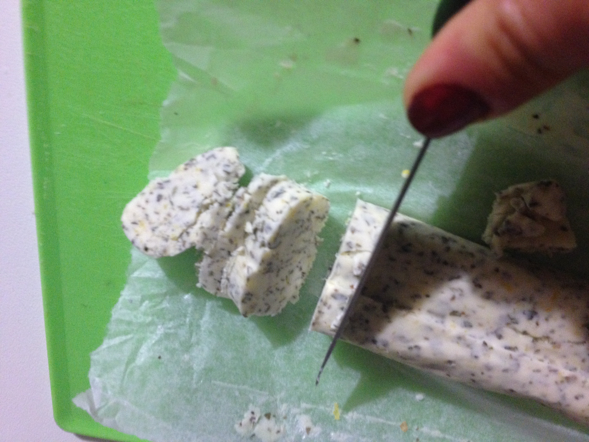
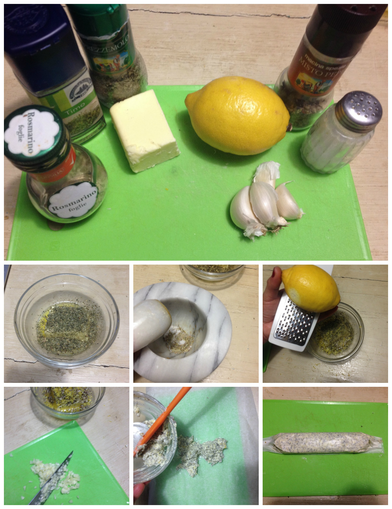

Aromatic garlic butter¶

- Type: other
Background¶
People usually thinks that Italy is the land of garlic butter and (yeah... Pizza Hut’s fault), I am sorry to say that that is not true. I tried the most amazing garlic butter on my Belgium vacation a few years ago and I was trying several times to replicate it. Finally I went close!, close enough to share with you this recipe.
Ingredients¶
- 150 grams unsalted german butter
- 1 lemon zest
- Salt and pepper to taste
- 4 garlic gloves
- 1/2 teaspoon dry rosemary
- 1/2 teaspoon dry thyme
- 1 teaspoon parsley (dry is ok too)
Steps¶
Put the butter in a small bowl and heat it in the microwave for 30 seconds at 750W.
Add to the butter salt, pepper, parsley
Grind the rosemary and thyme, add to the melted butter
Grate the lemon zest and add to the melted butter
Slice the garlic gloves, add to the the butter bowl
Cut a piece of baking paper, pour the mixture in the middle and roll it.
Refrigerate the butter roll for a least half hour before to use.
Ingredients and steps
Can be served with¶
- Steak
- Bread toast
- Green cooked vegetables